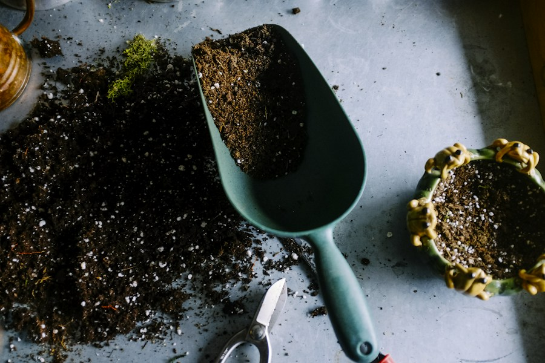
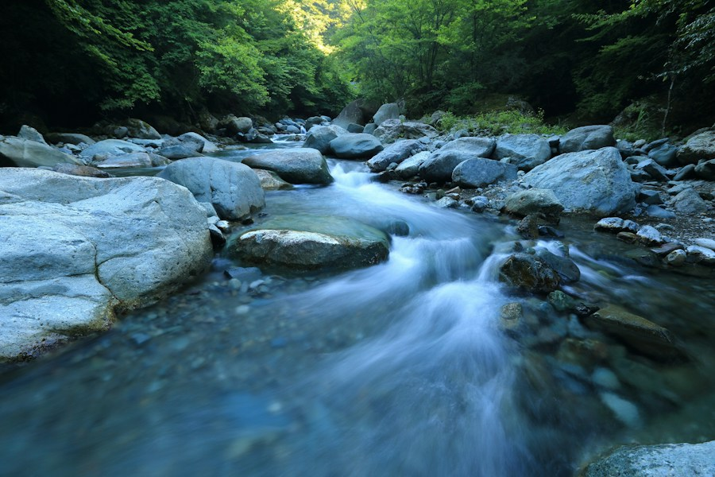

Nossa missão
Promover a conservação e a recuperação do meio ambiente por meio de ações de reflorestamento, educação ambiental e mobilização comunitária.

RAÍZES DO AMANHÃ • CUIDAR É TRANSFORMAR
Acreditamos na força de quem se une pela natureza. Cultivamos florestas, compartilhamos conhecimento e conectamos pessoas a um futuro mais verde.

O futuro começa01 / O INSTITUTO
O Instituto Raízes do Amanhã nasceu, neste projeto acadêmico, da ideia de aproximar pessoas e meio ambiente. Nossa história representa o que uma comunidade pode construir quando decide cuidar do lugar onde vive.
Da recuperação de áreas degradadas à educação ambiental, propomos ações que unem conhecimento, cooperação e respeito à vida.
Promover a conservação e a recuperação do meio ambiente por meio de ações de reflorestamento, educação ambiental e mobilização comunitária.
Contribuir para uma sociedade mais consciente e participativa na preservação dos recursos naturais.
02 / PROJETOS E AÇÕES
Três frentes de atuação.
Um mesmo compromisso com a vida.
REFLORESTAMENTO
Recuperação de áreas degradadas com o plantio de árvores nativas, ajudando a proteger o solo e a criar novos refúgios para a biodiversidade.
Ajude a plantar o futuroEDUCAÇÃO AMBIENTAL
Palestras, oficinas e atividades em escolas e comunidades para transformar a curiosidade sobre a natureza em hábitos de cuidado no dia a dia.
Compartilhe conhecimento
MOBILIZAÇÃO COMUNITÁRIA
Mutirões de retirada de resíduos de rios, córregos e suas margens, conectando a comunidade à proteção da água e dos ecossistemas locais.
Some forças pela água03 / IMPACTO AMBIENTAL
Cada árvore, cada pessoa, cada ação.
É assim que imaginamos a transformação.
Indicadores fictícios, apresentados exclusivamente para fins acadêmicos.
04 / GALERIA
Um olhar para o que queremos preservar.
Fotografias ilustrativas das nossas causas.
05 / COMO AJUDAR
Existem muitas formas de fazer a diferença. Encontre a sua.
Uma contribuição pode se transformar em mudas, ferramentas e materiais educativos. Conheça essa possibilidade de apoio.
Quero contribuirCompartilhe seu tempo e suas habilidades em atividades de plantio, educação ambiental e cuidado com os rios.
Quero participarEscolas, empresas e comunidades podem somar conhecimentos e recursos para ampliar o alcance de cada iniciativa.
Vamos somar forçasEsta é uma demonstração acadêmica. Não recebemos doações nem realizamos inscrições reais.
06 / CONTATO
Tem uma ideia, quer saber mais sobre os projetos ou descobrir como participar? Este espaço é para você.
Formulário demonstrativo: os dados não são enviados nem armazenados. Use informações fictícias para experimentar.